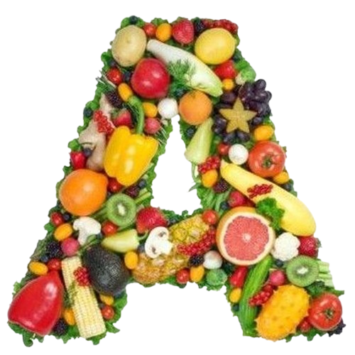

-Vitamin
Hatása
Ilyen értelemben az A-vitaminnak, illetve a retinoidoknak számos folyamatban, így a retina (szemideghártya) fényérzékenységét biztosító rodopszin (a retina működéséhez nélkülözhetetlen fényérzékeny anyag, látóbíbor) felépítésében, a csontnövekedésben, a reprodukcióban, az embrionális fejlődésben, a hámszövet és az epithelialis szövetek épségének a fenntartásában, az ektoderma normális fejlődéséhez és működéséhez (bőr, nyálkahártya, mirigyhám), és számos más sejt differenciálódásának irányításában van lényeges szerepük. Antioxidáns, gyökfogó tulajdonságú.
Előfordulása
- gabonafélék, hüvelyesek és őrleményeik, kenyerek, péksütemények: 0-1,5 mg
- száraztésztákban: 0-0,04 mg
- sajtos, túrós sütemények: 0 mg
- zöldség, gyümölcs: 0,1–12 mg (felső érték a sárgarépa)
- vaj, margarinféleségek: 0,2-0,5 mg
- húsok, húsipari termékek: nem jellemző
- halak: 0,5–2 mg
- tej: 0,005-0,1 mg
- tojás: 0,5-1,2 mg
Hiánya
- Látásromlás: Éjszakai vakság, szürkehályog.
- Immunrendszer gyengülése: Fogékonyság fertőzésekre.
- Bőrproblémák: Szárazság, hámlás, gyulladás.
- Hajhullás: Törékeny hajszálak.
- Növekedési zavarok: Gyermekeknél lassabb fejlődés.
- Szájüregi problémák: Fogínyvérzés, rossz fogak.
- Érzelmi instabilitás: Hangulatingadozások.
- Hormonális egyensúlyzavarok: Menstruációs problémák.